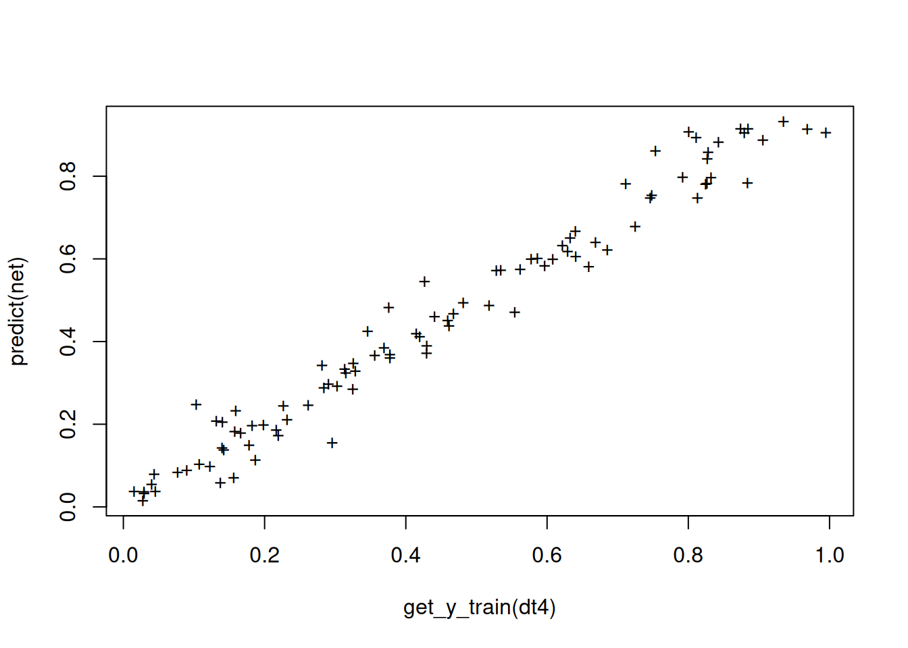
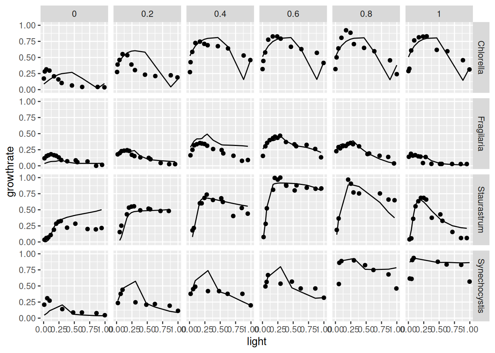
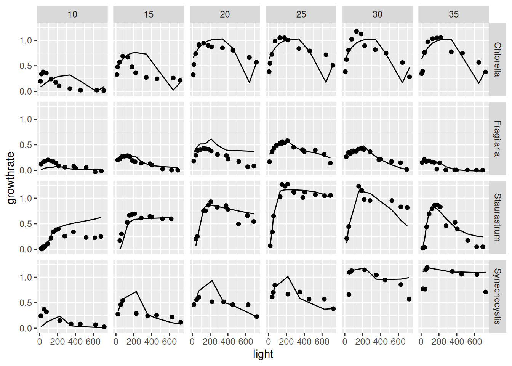

remotes::install_.packages_github("https://github.com/tpetzoldt/mlfeaturer")Neural Networks with mlfeaturer and nnet
2025-02-25
Introduction
In the following, we show how to use mlfeaturer in the context of a simple artificial neural network (ANN).
The data set was digitized from figures of Dauta et al. (1990), who analyzed growth rate dependency of four algae species on light intensity at different temperatures. Now, we aim to create a regression model to predict growth rate ()) at any values of light and temperature within the measured range for each species. To save space, we demonstrate the procedure for only two of the four species.
The data can also be fitted with parametric models instead of ML techniques. This is explained in another tutorial.
Package installation
To install the package, first install remotes from CRAN. Then install mlfeatures from Github:
And then load the required packages:
Prepare data
Here we set up an object dt4 with the data and the preprocessing machinery. Before creating this object with create_preprocessed_data we first add some additional columns. As the species names are nominal data, i.e. a character column, that are not directly supported by nnet, we convert it into so-called “dummy variables”, four rows containing 0 or 1:
## phytoplankton growth rate data set
data(dauta4)
spec_dummy <-
model.matrix(~ species - 1, dauta4) |>
as.data.frame()
head(spec_dummy) speciesChlorella speciesFragilaria speciesStaurastrum speciesSynechocystis
1 1 0 0 0
2 1 0 0 0
3 1 0 0 0
4 1 0 0 0
5 1 0 0 0
6 1 0 0 0The original species column and an additional no column are declared as id-columns (id_cols) that are not used as input and output, but can be used to identify the observations afterwards.
Then we create a split vector that assigns about 60% of the data randomly to the training set and 40% to the test set.
The growthrate column is used as target (y) variable and the others as inputs.
For the nnet package, input and output data need to be scaled to the interval , so we use scale method minmax with parameters minand max that are derived from all data, while for other machine learning applications, the scaling parameters are usually derived from the training set only.
dt4 <-
dauta4 |>
bind_cols(spec_dummy) |> # add columns of dummy variables
mutate(no = 1:n(),
split = sample(c(TRUE, FALSE), n(), # create random split column
prob = c(0.6, 0.4), replace = TRUE)) |>
create_preprocessed_data(target_col = "growthrate",
id_col = c("species", "no"),
split_col = "split",
scale_method = "minmax",
scale_option = "all" # min/max from complete data set
)Fit a neural network
To fit a neural network with 8 neurons, we can access the required data subsets using get_-functions. In the case below, the data are split according to the split-column and automatically scaled according to the scaling method minmax defined above:
net <- nnet(get_x_train(dt4), get_y_train(dt4),
size = 8, maxit = 200, trace = FALSE)Evaluate the network
To check whether the training was successful, we can compare the original (scaled) data with the scaled model outputs. Here we use the standard method predict from the nnet package:
plot(get_y_train(dt4),
predict(net),
pch = "+")
Function ml_evaluate can then be used to calculate a standard set of evaluation metrics.
ml_evaluate(dt4, net) # default is to use scaled data# A tibble: 5 × 4
metrics train test all
<chr> <chr> <chr> <chr>
1 R2 0.969164040334653 0.694730304047481 0.810535429705921
2 MSE 0.00237812881808903 0.019137223670471 0.0132004225419519
3 RMSE 0.0487660621548329 0.138337354573777 0.114893091793858
4 MAE 0.0354220561680988 0.102759300830686 0.0789055167435704
5 BIAS 0.00124145884313852 0.0252304049446036 0.0167324756983281We can of course also calculate metrics “manually”, e.g. the coefficient of determination for comparison:
paste("R^2 (train) =", 1 - var(residuals(net))/var(get_y_train(dt4)))[1] "R^2 (train) = 0.969164040334653"We can also check the residuals for remaining patterns:
Here we use functions predict and residuals from the mlfeaturer package that, in contrast to the default predict and residuals-functions have the preprocessed data object dt4 at the first position to support pipelining of the data. In the function call above, the complete data set from dt4 is used, the training set in black and the test set in red. We can see poor performance for the test set, especially at high values, that may probably result of the sub-optimal random splitting strategy.
Graphical comparison of the results
y_pred <-
predict(dt4, net) |>
as.data.frame() |>
# rename column to avoid duplication with original data
rename(growthrate_pred = growthrate)
get_data(dt4) |>
as.data.frame() |>
bind_cols(y_pred) |>
ggplot(aes(light, growthrate)) + geom_point() +
geom_line(aes(light, growthrate_pred)) +
facet_grid(species ~ temperature)
So far, neural network training and model evaluation occurred in the transformed scales (in our case minmax for both, x and y). In this case, we can re-transform the predictions with the optional argument to_original_scale and compare it with the original y-data by switching off preprocessing with prep = "none".
y_pred_orig_scale <-
predict(dt4, net,
to_original_scale = TRUE) |>
as.data.frame() |>
rename(growthrate_pred = growthrate)
get_data(dt4, prep = "none") |>
as_data_frame() |>
bind_cols(y_pred_orig_scale) |>
ggplot(aes(light, growthrate)) + geom_point() +
geom_line(aes(light, growthrate_pred)) +
facet_grid(species ~ temperature)Warning: `as_data_frame()` was deprecated in tibble 2.0.0.
ℹ Please use `as_tibble()` (with slightly different semantics) to convert to a
tibble, or `as.data.frame()` to convert to a data frame.
The results shown, are just for demonstration purposes and can surely be improved, e.g. by increasing the number of epochs, by trying multiple fits, by applying more intelligent splitting (e.g. stratified instead of random), by cross-validation, or by using another machine learning framework.
Acknowledgments
Many thanks to the R Core Team (R Core Team 2024) for developing and maintaining R. This documentation was written using knitr (Xie 2024) and rmarkdown (Allaire et al. 2024).
References
Allaire, JJ, Yihui Xie, Christophe Dervieux, Jonathan McPherson, Javier Luraschi, Kevin Ushey, Aron Atkins, et al. 2024. Rmarkdown: Dynamic Documents for r. https://github.com/rstudio/rmarkdown.
Dauta, Alain, Jean Devaux, Françoise Piquemal, and Lhoussaine Boumnich. 1990. “Growth Rate of Four Algae in Relation to Light and Temperature.” Hydrobiologia 207: 221–26. https://doi.org/10.1007/BF00041459.
R Core Team. 2024. R: A Language and Environment for Statistical Computing. Vienna, Austria: R Foundation for Statistical Computing. https://www.R-project.org/.
Xie, Yihui. 2024. Knitr: A General-Purpose Package for Dynamic Report Generation in r. https://yihui.org/knitr/.